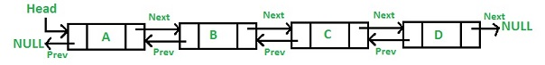

Stacks and Queues using Doubly Linked Lists
Spring 2018: Question 41 (use C language to make this program)
 Use doubly linked lists to demonstrate stacks and queues, and design a program to demonstrate dLink.
The node structure for the double linked list is as follows:
|
typedef struct dnode_s { char name[10]; int age; int year; int month; int day; struct dnode* front; struct dnode* next; } dnode_t; typedef dnode_t *nodep_t; |
A stack has two basic functions:
push: inserts an item to the top of the stack
pop: removes an item from the top of the stack
A queue also has two basic functions:
push: inserts an item to the end (tail) of the queue
pop: removes an item from the start of the queue
dLink: in this mode, you can add or remove data to/from the list, and you will have to make a function to print out all the names in the list.
Input instruction:
- First, input 1 for stack, 2 for queue, and 3 for dLink.
- The following commands are used in stack:
- 1: push -- input a line of data which contains a person’s name, age, birthday (year, month, day, with each number separated by a space). Separate each piece of data with a space.
- 2: pop -- removes the topmost data from the stack.
- 3: This command ends the program.
- The following commands are used in queue:
- 1: push -- enqueue: input a line of data which contains a person’s name, age, birthday (year, month, day, with each number separated by a space). Separate each piece of data with a space.
- 2: pop -- removes the data from the start of the queue.
- 3: This command ends the program.
- The following commands are used in dLink:
- 1: This command adds new data. Input a line of data which contains a person’s name, age, birthday (year, month, day, with each number separated by a space), and another name (input two names in total). The new data will be appended after the data which contains the second name mentioned in the input.
- 2: This command removes data. Input a name, and the data containing that person’s name will be removed from the list.
- 3. This command prints all the names in the list.
- 4: This command ends the program.
Output instructions:
- When inputting the pop command in queue, or the dequeue command in queue, input another number, which commands the system to print the following from the data which is removed from the queue:
1: name
2: age
3: birthday (year, month, date). Separate each number with an underscore (_). - If the stack is empty when the pop command (in stack) is input, output “The Stack is empty”.
If the queue is empty when the dequeue command (in queue) is input, output “The Queue is empty”. - In dLink, after inputting the name list command, output “list name output:”, followed by the names in the list on a new line.
- In dLink, output “name not found” if any of the following occur:
- when adding new data in dLink, none of the names in the data match the second name mentioned in the input (unless if the list is empty)
- when deleting data in dLink, none of the names in the data match the name mentioned in the input.
| Sample Input | Expected Output |
|---|---|
|
1 1 "Marry Hu" 19 1989 7 16 1 "Tom Chen" 22 1996 10 19 2 1 1 "Billy Wu" 15 2005 3 18 2 3 2 2 1 "Lucas Su" 24 1993 5 21 2 3 2 1 3 |
Tom Chen 2005_3_18 19 1993_5_21 The Stack is empty |
|
1 1 "Marry Hu" 19 1989 7 16 1 "Tom Chen" 22 1996 10 19 2 1 1 "Billy Wu" 15 2005 3 18 2 3 2 2 1 "Lucas Su" 24 1993 5 21 2 3 2 1 3 |
Marry Hu 1996_10_19 15 1993_5_21 The Queue is empty |
|
3 1 "Marry Hu" 19 1989 7 16 "Lucas Su" 1 "Tom Chen" 22 1996 10 19 “Marry Hu” 1 "Billy Wu" 15 2005 3 18 "Marry Hu" 3 2 "Tom Chen" 3 4 |
list name output: Marry Hu Billy Wu Tom Chen list name output: Marry Hu Billy Wu |